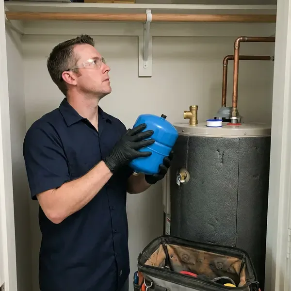
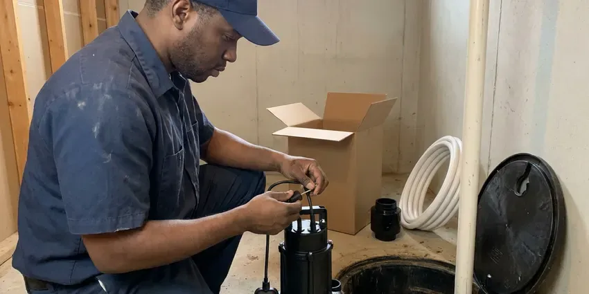
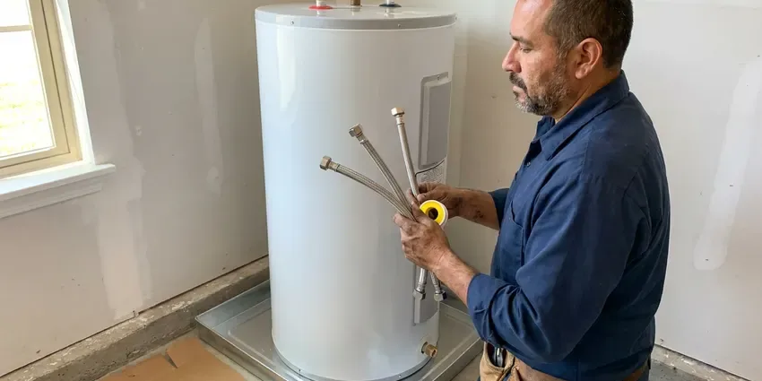
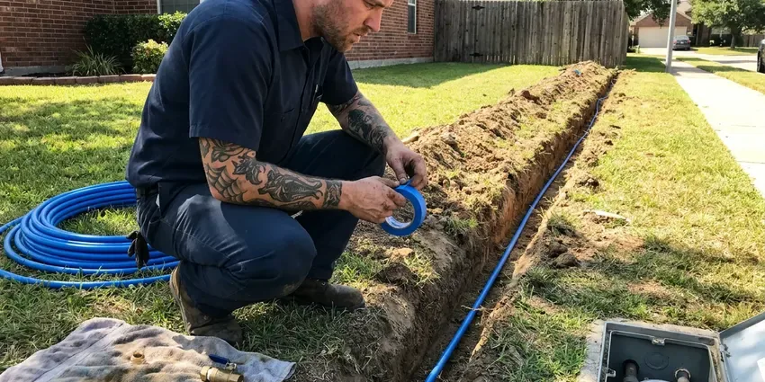
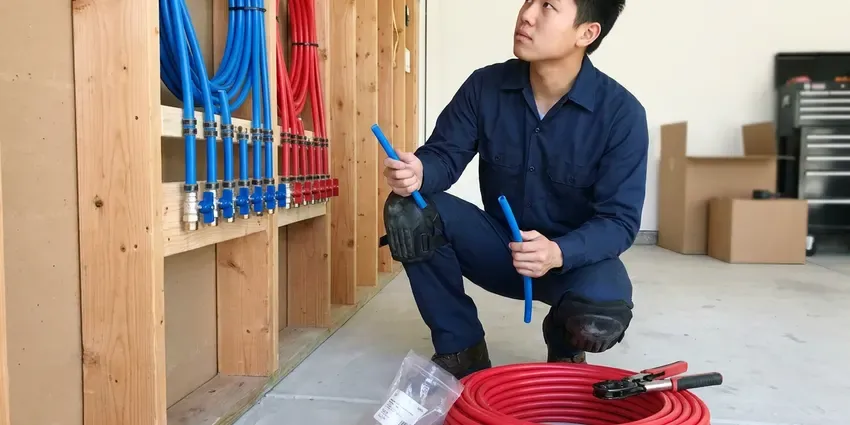

Water Heater Expansion Tank Installation in Middlebury, VT
Dripping relief valve or banging pipes in Middlebury, VT? A correctly sized expansion tank usually fixes the problem in under two hours.
- Same-Day Installs
- Licensed Plumbers
- Licensed Local Plumbers
- Fast Local Service

Protect Your Water Heater in Middlebury, VT
A small expansion tank can add years to your water heater and stop that relief valve from dripping.
Thermal Expansion Protection in Middlebury, VT
CKV Plumbing measures static pressure, sizes the tank for your heater capacity and precharges the air bladder to match. The tank goes on the cold supply, strapped to the wall, so the weight of a full tank never hangs on the pipe, and then we run a full heating cycle while watching the gauge. The needle should stay steady.
Some of what we do:
- Strapping and bracket support for the tank
- Installs for every water heater type
- Compliance with local plumbing codes

Additional Plumbing Installation Services in Middlebury, VT
We install water heaters, pumps, lines, and fixtures across Middlebury, VT with careful, permitted work that passes inspection the first time.


Sump Pump Installation in Middlebury

Middlebury water heater installation specialists


Water Line Installation near Middlebury


Customers
Why Choose CKV Plumbing for Water Heater Expansion Tank Installation in Middlebury, VT?
Our plumbers check the PRV and the relief valve on the same visit. You get the full system checked, not just one part, and if the PRV is creeping above its setting or the relief valve has been weeping for months, we can fix it before it causes a bigger problem. It saves a second call.
- Code Compliance, Many local codes require a tank on new heaters in closed systems.
- System Protection, The tank takes up the extra volume from heating, so your heater and pipes are not strained.
- Measured Pressure, We test static pressure and set the precharge to match.
Citywide Coverage
Townhomes, condos and light commercial buildings across Middlebury get the same service as single-family homes. We size for the heater and the building, and for shared mechanical rooms we coordinate access with the property manager so nobody waits around. We work to your schedule.
Experienced Team
Tight closets and attic platforms do not slow our plumbers down. They can fit a tank in tight spots without stressing the pipe, using a short nipple and a bracket when the wall is close, or a horizontal mount where the manufacturer allows it. Each brand lists its approved positions.
Safety-First Approach
Most plumbing codes require an expansion tank whenever a water heater goes on a closed system. We install to local code every time, and we support the tank on its own so a full tank never strains the fittings or the heater's cold inlet. Support is not optional.
Trusted Certified Middlebury Plumbing Services Professionals
At CKV Plumbing, we are proud to offer certified plumbing services throughout Middlebury, VT. Those papers on the wall mean something. Our plumbers hold recognized industry credentials, and they follow strict safety and quality rules on every repair, installation and maintenance call we run.
Call Us Now PHCC Plumbing Contractor Recognition
PHCC Plumbing Contractor Recognition Better Business Bureau (BBB) Accreditation
Better Business Bureau (BBB) Accreditation Angi Certified Pro
Angi Certified Pro ISO 9001 Quality Management Certification
ISO 9001 Quality Management CertificationThe Expansion Tank Work We Do in Middlebury, VT
Residential Expansion Tank Installation in Middlebury
Closed systems are the reason most homes in Middlebury need an expansion tank. Once a PRV or meter check valve is in place, heated water cannot push back into the main, so every heating cycle raises the pressure in your pipes until something gives. Usually the relief valve gives first.

Preventative Expansion Tank Maintenance in Middlebury, VT
Air precharge leaks down slowly over the years, like a bike tire. We check it during water heater service, and with the water pressure relieved we top the charge back up to match your house pressure, then look over the fittings and the strap in Middlebury, VT. An undercharged tank wears out fast.
Pressure Reducing Valve and Expansion Tank Pairing in Middlebury
Pressure reducing valves are common, and they protect fixtures from high street pressure. The catch is they create a closed system, so we test the PRV output, replace it if it is creeping, and pair it with a correctly charged expansion tank so pressure stays steady throughout the house in Middlebury. Creeping PRVs are common.
Tank Sizing and Placement in Middlebury
Sizing comes down to heater volume, supply pressure and water temperature. We plug those into the manufacturer chart, then mount the tank on the cold inlet near the heater, in a spot you can reach later, because the precharge needs checking and the tank will eventually need replacing in your Middlebury home. Access saves money later.
Preventing Water Heater Damage in Middlebury
Pressure swings wear out water heaters early. Without a tank, each heating cycle spikes pressure in the heater and the lines, stressing the welds, the fittings and the relief valve, and a lot of heaters we replace in Middlebury died from that stress years before their time. The fix is a small tank.
Commercial Expansion Tank Solutions in Middlebury, VT
Commercial water heaters move far more water, so the expansion volume is bigger too. We size the tank to the full system volume, storage tanks included, then floor-mount it with proper supports and schedule the install around your business hours in Middlebury, VT. Hot water stays on as long as possible.
Expansion Tank Replacement & Upgrades in Middlebury
A waterlogged expansion tank does nothing at all. The old diaphragm tears and the tank fills with water, and from then on your system acts like it has no tank, so we replace it with a new, correctly sized unit and upsize if your household or heater has changed since the first one went in at your Middlebury home. Most swaps take under an hour.

Expansion Tank Replacement in Middlebury, VT
The bladder or diaphragm inside the tank is what fails. After it tears, water floods the air side, the tank goes heavy, and the pressure spikes come right back, so we replace the tank with a correctly sized unit and check the precharge before it goes on the line in Middlebury, VT. They do not repair well.
Water Heater Expansion Tank Installation Near Me in Middlebury, VT
Protecting your plumbing does not have to wait. We can usually have a local plumber there in a day or two, measure your pressure and tell you whether thermal expansion is the cause of the drip in Middlebury. A pressure check is quick.
Local plumbing systems are what we know best. The same regulators and meter setups show up every week, so we know how they behave and can size your expansion tank and set the charge correctly on the first try in Middlebury. No return visit needed.
CKV Plumbing at a Glance
- Fully licensed plumbing team covering Middlebury, VT
- 24/7 emergency service with same-day scheduling
- Clear written estimates, no hidden fees
- 4.8-star rated by 553+ Vermont customers
Middlebury Map
Middlebury Information
- Population
- 7,304
- Area codes
- Local
- Service area
- Middlebury and towns within a 40 mile drive
- Nearby
- Shelburne, Rutland, South Burlington, Essex Junction
High incoming water pressure and common pressure regulators make thermal expansion a real issue for water heaters in Middlebury, VT, and a properly charged expansion tank keeps that pressure in check.
Expert Services
Call CKV Plumbing for reliable plumbing work done by licensed pros in Middlebury, VT.
Our Specialized Plumbing Services in Middlebury, VT
At CKV Plumbing, we handle the full list of plumbing services across Middlebury, VT. From leak detection to full system installs, our team works fast and charges fair prices on homes and commercial properties alike. Take a look at our core services below:


How We Install Expansion Tanks in Middlebury, VT
Installing an expansion tank is quick, but we follow a careful process to make sure it is sized and charged correctly.
Request a Quote
Call (802) 209-5139 and tell us about your water heater and any symptoms like a dripping relief valve. We give you an upfront price.
Test and Size
We measure static pressure, check the PRV and relief valve, and pick the tank. The air charge is set to match your pressure.
Install and Verify
We install and support the tank on the cold supply, then run the heater through a cycle. Pressure has to stay stable.
Frequently Asked Questions About Water Heater Expansion Tank Installation in Middlebury
Plan on $250 to $500 in Middlebury for a typical expansion tank job. Final cost depends on tank size, install difficulty and any pipe changes, and we give you that number after looking at the heater and measuring your pressure on site. No surprises on the bill.
Permit rules vary in Middlebury, and they often depend on whether the tank goes in with a new water heater. Standalone tanks usually do not need one, but we check the local rules and advise you before work starts, and when it is part of a heater replacement the permit covers both. Permits are on us.
Manufacturers usually offer one to five years depending on the model. We warranty our installation labor as well.
One to two hours for most installs. Attic work or a PRV replacement can add an hour or two.
Yes, on both the tank and our labor. Tank coverage comes from the maker, and labor coverage comes from us, and we go over the specific terms during your visit so you know who to call and for how long. Coverage usually runs one to five years.
Heavy and dull when tapped near the top means waterlogged. If the air valve spits water when pressed, the bladder is gone.
Most tanks last 5 to 10 years. Town water systems in Middlebury and other communities are generally reliable, but older service lines can add rust and discolored water. How long yours lasts depends on water quality, pressure and the install, and a check during water heater service will catch a failing tank before the relief valve starts dripping. Undercharged tanks fail first.
Sometimes. Thermal expansion is usually minor on tankless because it holds so little water, but a closed system with a backflow preventer, a PRV or a recirculation loop can still call for one, and we check before recommending it. Local code may require it regardless.
What People Are Saying About Our Plumbing Experts?

Sofia M.
Two new toilets went in during one visit. The tech set them on new wax rings and swapped the old supply lines. He also noticed our bathroom faucet dripping and replaced the cartridge while he was there. No mess left behind.
Toilet Installation · Shelburne, VT
Kevin O.
Before buying our house I paid for a sewer camera inspection. CKV Plumbing found a belly in the line that held standing water about forty feet from the cleanout. We used the video to get the sellers to fix it before closing.
Sewer Camera Inspection · Winooski, VT
Lisa C.
Water was pouring out from under the washing machine on a holiday weekend. CKV Plumbing talked me through closing the valves over the phone and had a plumber at the house within ninety minutes. It was a burst fill hose.
Emergency Plumbing · Rutland, VTRachel N.
Hard water was leaving white crust on every faucet and our dishwasher was struggling. The tech tested the water, recommended a softener sized for a family of five, and installed it with a bypass valve in one afternoon. The spots on our glasses are gone.
Water Softener · Middlebury, VTMarcus H.
Grease from the fryer line kept clogging the kitchen drain at my diner. CKV Plumbing hydro jetted the line after closing, showed me the buildup on camera, and set us up on a quarterly cleaning so it does not catch us on a Friday again.
Drain Cleaning · Burlington, VTRobert G.
The camera showed a full break in our clay sewer line near the street. CKV Plumbing replaced it with a trenchless pipe burst, so the only digging was two small pits in the yard. They let us watch the footage before and after.
Sewer Line Replacement · Shelburne, VT